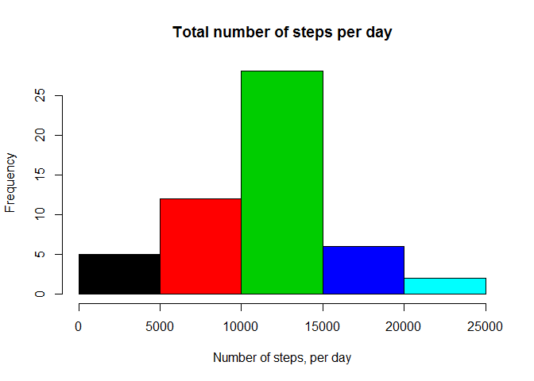
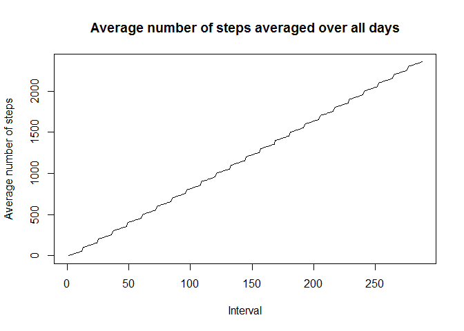
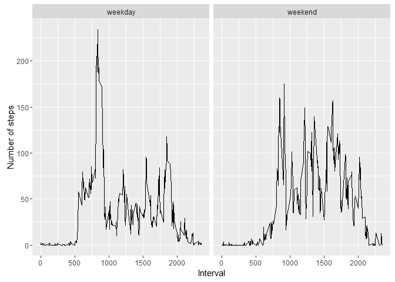

library(dplyr)## Warning: package 'dplyr' was built under R version 3.2.3##
## Attaching package: 'dplyr'## Следующие объекты скрыты от 'package:stats':
##
## filter, lag## Следующие объекты скрыты от 'package:base':
##
## intersect, setdiff, setequal, unionlibrary(ggplot2)## Warning: package 'ggplot2' was built under R version 3.2.3rs = read.csv("activity.csv")rs.q.1 = rs %>%
group_by(date) %>% #group the data
summarize(sum=sum(steps)) %>% #summarize it
.[["sum"]] #get the sum column
#create a histogram
hist(rs.q.1, xlab="Number of steps, per day",col=1:5,main="Total number of steps per day")
#calculate and print the mean and the median
mean.steps = mean(rs.q.1,na.rm=T)
median.steps = median(rs.q.1,na.rm=T)
print(mean.steps)## [1] 10766.19print(median.steps)## [1] 10765rs.q.2 = rs %>%
group_by(interval) %>% #group the data
summarize(mean.steps=mean(steps,na.rm=T)) #summarize it
#create the time-series plot
plot(rs.q.2$interval,rs.q.2$mean.steps, type="l",xlab="Interval", ylab="Average number of steps", main="Average number of steps averaged over all days")
#search for the interval containing the maximum number of steps
max.steps.interval = rs.q.2[which.max(rs.q.2$mean.steps),]
print(max.steps.interval)## Source: local data frame [1 x 2]
##
## interval mean.steps
## (int) (dbl)
## 1 835 206.1698#calculate the total number of missing values
na.quantity = sum(!complete.cases(rs))
print(na.quantity)## [1] 2304#copy the original dataset to the new one
rs.q.3 = rbind(data.frame(),rs)
#impute missing values using daily means
for(row in 1:nrow(rs)) {
if(is.na(rs[row,"steps"])) {
c.date = rs[row,"date"]
rs.q.3[row,"steps"] = mean(rs["date"==c.date,"steps"],na.rm=T)
}
}
rs.q.3 = rs.q.3 %>%
group_by(date) %>% #group by date
summarize(sum=sum(steps)) %>% #summarise it
.[["sum"]] #get the sum column
#create a histogram
hist(rs.q.3, xlab="Number of steps, per day",col=1:5,main="Total number of steps per day")#calculate the mean and the median of the imputed dataset
mean.steps.imputed = mean(rs.q.3,na.rm=T)
median.steps.imputed = median(rs.q.3,na.rm=T)
answers = c(mean.steps,mean.steps.imputed,median.steps,median.steps.imputed)
names(answers) = c("mean of the original","mean of the imputed","median of the original","median of the imputed")
print(answers)## mean of the original mean of the imputed median of the original
## 10766.19 10766.19 10765.00
## median of the imputed
## 10765.00#use the function for separating weekdays from weekands
weekends.or.weekdays = function(x){
w = as.POSIXlt(as.Date(x, "%Y-%m-%d"))$wday
if (w == 0 | w == 6) {
"weekend"
} else "weekday"
}
#create the new factor variable "day"
rs$day = vapply(rs$date,weekends.or.weekdays,character(1))
rs$day = as.factor(rs$day)
rs.q.4 = rs %>%
group_by(interval,day) %>% #group by an interval and a day
summarize(mean.steps=mean(steps,na.rm=T)) #summarize it, using mean function
#create a plot
p = qplot(interval, mean.steps, data=rs.q.4, geom=c("line"), xlab="Interval",ylab="Number of steps",facets=.~day)
print(p)